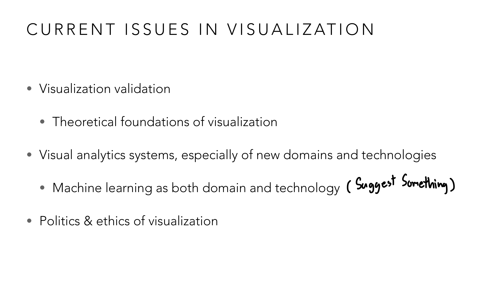
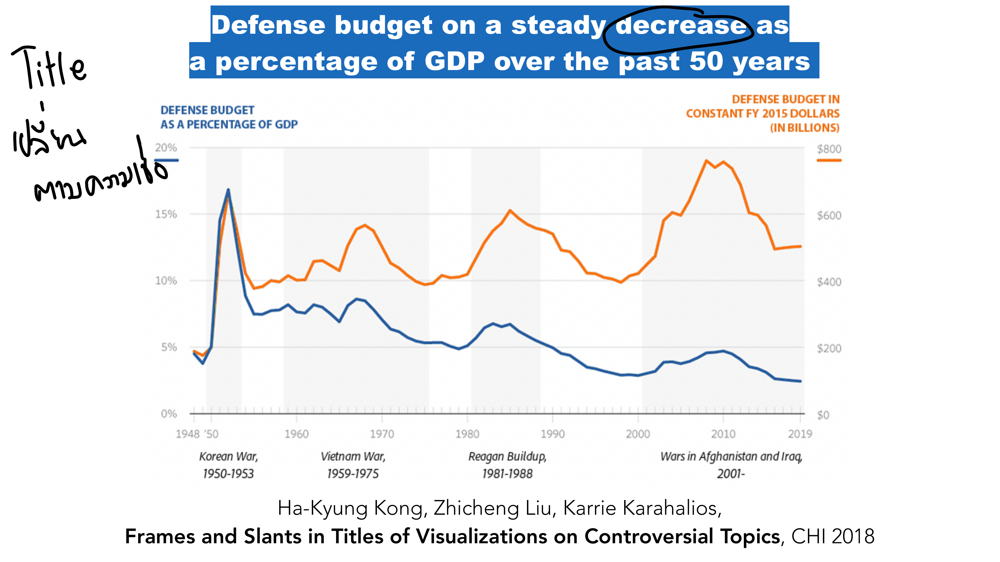
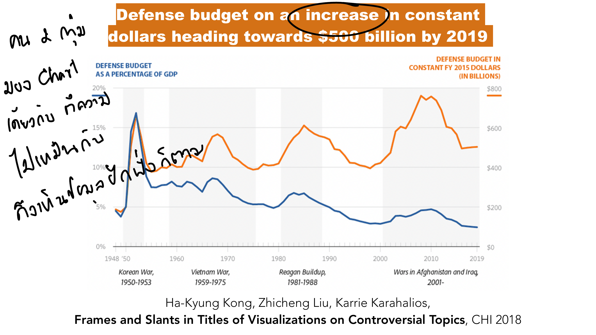
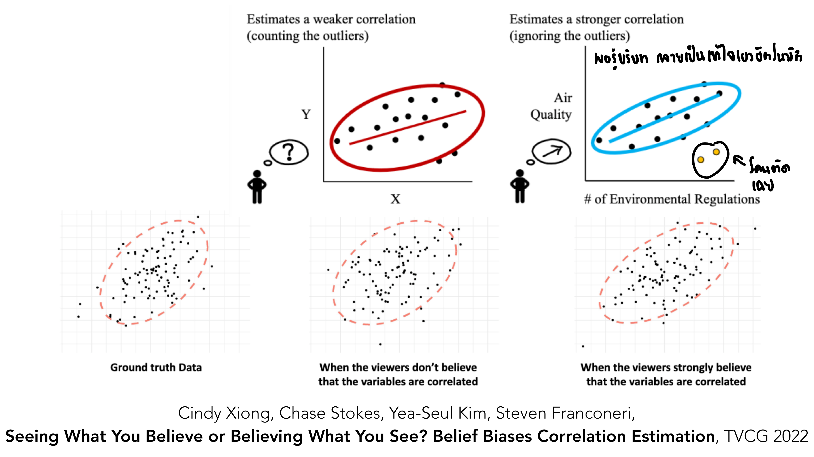
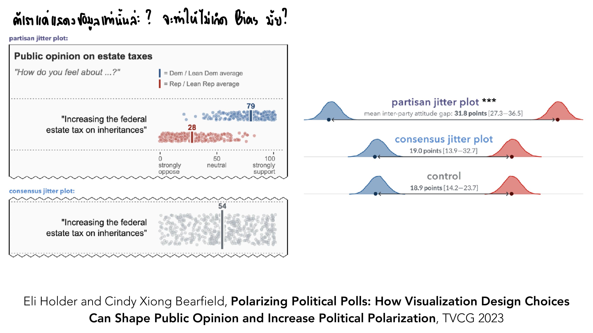

vis-13-etc.pdf
บทสุดท้ายของคอร์ส — ครึ่งแรกของสไลด์ (หน้า 3–36) เป็นตัวอย่าง Concrete Scale เพิ่มเติมต่อจาก Lesson 12 (Ukraine/Gaza size comparison, ProPublica taxes, Apple trillion market cap ฯลฯ) ซึ่งเป็นแนวคิดเดียวกับที่อธิบายไปแล้ว ส่วนที่ใหม่จริง ๆ ของบทนี้เริ่มจากหน้า 37: ภาพรวมว่างานวิจัย visualization ทุกวันนี้กำลังสนใจเรื่องอะไรอยู่ — และปิดท้ายด้วยประเด็นที่สำคัญที่สุดข้อหนึ่งของทั้งวิชา: visualization ไม่เคยเป็นกลางร้อยเปอร์เซ็นต์.
ก่อนปิดคอร์ส อาจารย์สรุปภาพรวมว่าสาขา visualization กำลังเดินหน้าไปทางไหน:

4 หัวข้อหลัก: Visualization validation (ต่อยอด Lesson 11 — ยิ่งระบบซับซ้อนขึ้น ยิ่งต้อง validate ยากขึ้น) Theoretical foundations of visualization (สาขานี้ยังไม่มีทฤษฎีพื้นฐานที่นิ่งสมบูรณ์แบบเหมือนคณิตศาสตร์/ฟิสิกส์ ยังถกเถียงกันอยู่) Visual analytics systems ในโดเมน/เทคโนโลยีใหม่ โดยเฉพาะ Machine Learning ที่เป็นทั้ง "โดเมนที่ต้อง visualize" (เช่น XAI จาก Lesson 10) และ "เครื่องมือที่ช่วยสร้าง visualization" (เช่น LLM ช่วยเขียนโค้ด D3.js หรือช่วยสร้าง narrative อัตโนมัติจาก Lesson 12) และสุดท้าย Politics & ethics of visualization ซึ่งเป็นหัวข้อที่เหลือของบทนี้จะเจาะลึก เพราะมันคือคำถามที่ตามหลอกหลอนทุกอย่างที่เรียนมาตลอดคอร์ส: "ถ้าข้อมูลถูกต้อง 100% แล้ว visualization จะมีอคติได้ไหม" คำตอบคือได้ — และ 3 งานวิจัยถัดไปพิสูจน์เรื่องนี้ด้วยตัวเลขจริง.
งานวิจัยนี้เอาชาร์ตข้อมูลชุดเดียวกันเป๊ะ (งบประมาณกลาโหมสหรัฐฯ 50 ปี มี 2 เส้น: เส้นน้ำเงิน = % ของ GDP, เส้นส้ม = ดอลลาร์คงที่) ไปให้ผู้เข้าร่วม 2 กลุ่มดู เปลี่ยนแค่หัวข้อด้านบนเท่านั้น:


ทั้งสองภาพคือชาร์ตเดียวกันทุกพิกเซล ไม่มีตัวเลขไหนถูกแก้เลยแม้แต่จุดเดียว — สิ่งเดียวที่เปลี่ยนคือหัวข้อด้านบน กลุ่มแรกเห็นหัวข้อ "decrease" (พุ่งความสนใจไปที่เส้นน้ำเงิน %GDP ที่ลดลงจริงตั้งแต่ยุคสงครามเกาหลี) กลุ่มที่สองเห็นหัวข้อ "increase" (พุ่งความสนใจไปที่เส้นส้มดอลลาร์คงที่ที่เพิ่มขึ้นจริงในช่วงสงครามอัฟกานิสถาน/อิรัก) — โน้ตกำกับในสไลด์บอกตรง ๆ ว่าคนสองกลุ่มมองชาร์ตเดียวกัน แต่ลงเอยด้วยความเชื่อที่สอดคล้องกับหัวข้อที่ตัวเองได้รับ ไม่ว่าจะโฟกัสไปที่เส้นไหน — ทั้งสองหัวข้อ "ไม่ได้โกหก" เลยด้วยซ้ำ (ทั้งสองเส้นเป็นข้อมูลจริงทั้งคู่) แต่การเลือกว่าจะไฮไลต์เส้นไหนในหัวข้อ ก็เพียงพอที่จะชักจูงให้คนเชื่อไปคนละทางได้แล้ว.
ปัญหาไม่ได้จำกัดแค่หัวข้อ — แม้ scatter plot เดียวกันเป๊ะ (ground truth data เดียวกัน) ความเชื่อที่ผู้ดูมีอยู่ก่อนแล้วก็บิดเบือนการประเมินความสัมพันธ์ได้เช่นกัน:

ข้อมูลตั้งต้น (ground truth data) เป็น scatter plot ชุดเดียวกันทั้งสองสถานการณ์ ต่างกันแค่ "คำถามที่ผูกกับข้อมูลนั้น" — สถานการณ์ซ้าย: ผู้ดูไม่เชื่อว่าตัวแปร X กับ Y (ไม่ระบุชื่อ ไม่มีความหมายเฉพาะ) น่าจะสัมพันธ์กัน เขาจึง "นับ" จุด outlier ที่กระจายออกนอกแนวเป็นหลักฐานคัดค้าน ทำให้วง ellipse ที่ลากในใจกว้างและหลวม (ประเมิน correlation อ่อนกว่าความจริง) สถานการณ์ขวา: ข้อมูลจุดเดียวกันเป๊ะ แต่ติดป้ายว่าเป็น "Air Quality" กับ "# of Environmental Regulations" ซึ่งผู้ดูเชื่ออยู่ก่อนแล้วว่าต้องสัมพันธ์กันแน่ ๆ (ยิ่งกฎเยอะ อากาศยิ่งดี) เขาจึง "มองข้าม" จุด outlier ตัวเดียวกันนั้นไปเลย ทำให้วง ellipse แคบและชัน (ประเมิน correlation แรงกว่าความจริง) — โน้ตกำกับชี้เฉพาะจุดว่านี่คือ outlier ชุดเดียวกันในทั้งสองภาพ พิสูจน์ว่าตัวข้อมูลไม่ได้เปลี่ยนเลย เปลี่ยนแค่ "ป้ายกำกับที่จุดชนวนความเชื่อเดิม" ของผู้ดูเท่านั้น.
ตัวอย่างสุดท้าย — และหนักแน่นที่สุด — แสดงว่าการออกแบบ visualization โพลการเมืองมีผลจริงต่อการรับรู้ระดับความแตกแยกในสังคม ไม่ใช่แค่ทฤษฎี:

คำถามสำรวจเดียวกันเป๊ะ ("Increasing the federal estate tax on inheritances" — ผู้ตอบให้คะแนน 0-100 ว่าเห็นด้วยแค่ไหน) แต่แสดงผลได้ 2 แบบ: Partisan jitter plot แยกจุดของผู้ตอบเป็นก้อนสีน้ำเงิน (Democrat, ค่าเฉลี่ย 79) กับก้อนสีแดง (Republican, ค่าเฉลี่ย 28) คนละกลุ่มชัดเจน เทียบกับ Consensus jitter plot ที่รวมทุกคนเป็นก้อนสีเทาเดียว ไม่แยกสี ไม่แยกพรรค (ค่าเฉลี่ยรวม 54) — งานวิจัยวัดผลจริงว่า หลังดูแต่ละแบบแล้ว ผู้เข้าร่วมประเมิน "ช่องว่างความเห็นระหว่างสองพรรค" เท่าไหร่: กลุ่มที่ดู partisan jitter plot ประเมินช่องว่างสูงถึง 31.8 คะแนน กลุ่มที่ดู consensus jitter plot ประเมินแค่ 19.0 คะแนน และกลุ่มควบคุมที่ไม่เห็นชาร์ตเลย (ตอบจากความรู้สึกเดิม) ประเมินไว้ที่ 18.9 คะแนน — สังเกตว่า consensus jitter plot กับกลุ่มควบคุมแทบไม่ต่างกันเลย (19.0 vs 18.9) แต่ partisan jitter plot ดันตัวเลขสูงขึ้นไปเกือบเท่าตัว (31.8) ทั้งที่เป็นข้อมูลสำรวจชุดเดียวกันทุกประการ — โน้ตกำกับตั้งคำถามแดกดันไว้ตรง ๆ ว่า "เราแค่แสดงข้อมูลเท่านั้นแหละ จะทำให้เกิด bias มั้ย" คำตอบจากตัวเลขจริงคือ: ได้แน่นอน แค่การตัดสินใจว่าจะจัดกลุ่มและใส่สีตามพรรคการเมืองหรือไม่ ก็เพียงพอที่จะทำให้ผู้ดูรู้สึกว่าสังคมแตกแยกมากกว่าที่ตัวเลขจริงบอกไว้เกือบสองเท่า.
ไล่ทุกหน้าของ vis-13-etc.pdf — หน้าที่มี ✓ ถูกอธิบายและ/หรือใส่รูปในเนื้อหาข้างบนแล้ว ที่เหลือเป็นตัวอย่างประกอบ/ลิงก์สื่อจริง/งานวิจัยเชิงลึก (etc).
| หน้า | เนื้อหา | สถานะ |
|---|---|---|
| 1–2 | ปก + ตารางเรียนทั้งเทอม | etc — บริบทวิชา |
| 3–36 | ต่อยอด Contextualization/Concrete Scales จาก Lesson 12 (Ukraine/Gaza size, Thai cave rescue, ProPublica taxes, moon explainer, Reuters plastic, Uber Bangkok, Apple trillion market cap, WSJ hotel chains, SCMP leaders height, Olympic races near you, VR data visceralization) จบด้วย "End of Contextualization" | etc — เนื้อหาเดียวกับหัวข้อ 8 ของ Lesson 12 (Unitization/Anchoring/Analogies) ไม่ทำซ้ำที่นี่ ดูรายละเอียดที่ Lesson 12 |
| 37 | Current Issues in Visualization: 4 หัวข้อหลัก | ✓ หัวข้อ 1 (มีรูป) |
| 38–40 | งานวิจัยล่าสุดเรื่อง LLM/genAI/Vision-Language Models กับ visualization | etc — ตัวอย่างงานวิจัยใหม่ล่าสุด นอกขอบเขต quiz หลัก แต่เป็นส่วนขยายของหัวข้อ 1 |
| 41 | The Curse of Knowledge in Visual Data Communication | etc — เกริ่นนำหัวข้อ ethics ก่อนเข้าเคสตัวอย่างจริง |
| 42 | เกริ่นนำ Frames and Slants (title bias) | ✓ ส่วนหนึ่งของหัวข้อ 2 |
| 43–44 | Frames and Slants: Defense budget decrease vs increase framing | ✓ หัวข้อ 2 (มีรูป) |
| 45 | Regression by Eye: Estimating Trends in Bivariate Visualizations | etc — งานวิจัยเสริมเรื่องการประเมิน trend ด้วยสายตา เชื่อมกับหัวข้อ 3 |
| 46 | Belief Biases Correlation Estimation | ✓ หัวข้อ 3 (มีรูป) |
| 47 | Motivated Attention in Climate Change Perception | etc — ตัวอย่างเสริมเรื่อง motivated reasoning นอกขอบเขต quiz หลัก |
| 48 | Data is Personal: Attitudes in Rural Pennsylvania | etc — งานวิจัยเสริมเรื่องมุมมองต่อข้อมูลตามบริบทวัฒนธรรม/พื้นที่ |
| 49 | Polarizing Political Polls | ✓ หัวข้อ 4 (มีรูป) |
สงสัยตรงไหน ถามได้เลยในแชท — ผมเป็นผู้สอนของคุณ ถามซ้ำได้ ถามลึกได้ ไม่ต้องเกรงใจ ขอบคุณที่เรียนมาจนจบทั้ง 13 บท — พร้อมสำหรับ comprehensive exam แล้ว.